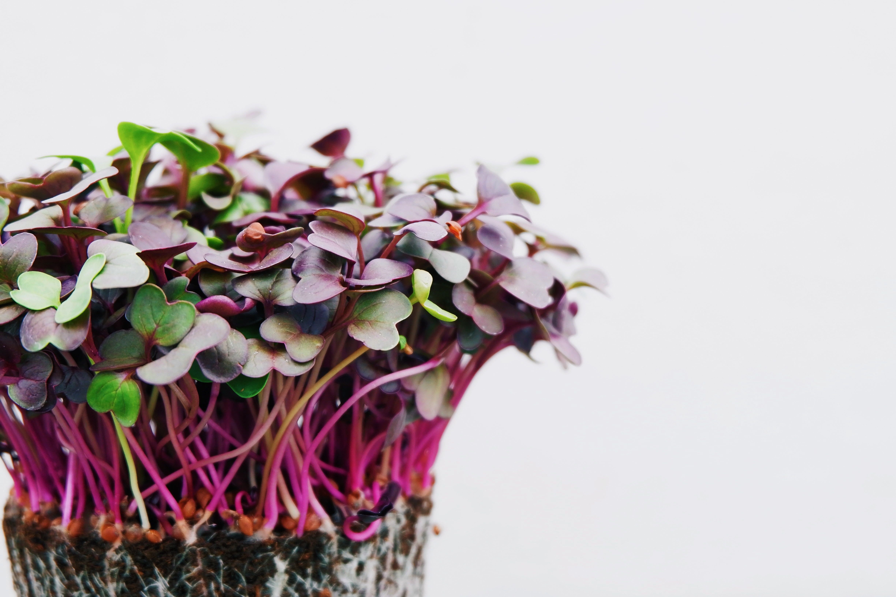

Microgreens can be a practical way to add fresh, nutritious produce to meals, even for city dwellers.
The most popular varieties are produced using seeds from the following plant families:
- Brassicaceae family: Cauliflower, broccoli, cabbage, watercress, radish and arugula.
- Asteraceae family: Lettuce, endive, chicory and radicchio.
- Apiaceae family: Dill, carrot, fennel and celery.
- Amaryllidaceae family: Garlic, onion, leek.
- Amaranthaceae family: Amaranth, quinoa swiss chard, beet and spinach.
- Cucurbitaceae family: Melon, cucumber and squash.